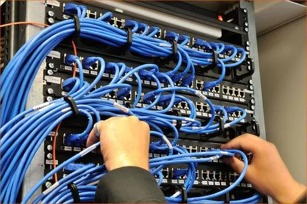

Elevate Your Connectivity with Cipher Knights
In today's digitally driven world, the success of any organization hinges on its ability to connect, collaborate, and secure its digital assets effectively.
At Cipher Knights, we're your dedicated partner in achieving these critical goals through cutting-edge computer networking solutions.
With our expertise, your business can experience seamless connectivity, enhanced productivity, and fortified security.
Build your strong Network with us
Computer networking is the intricate web of interconnected systems, devices, and infrastructure that underpins the modern digital world. At Cipher Knights, we are not just experts in identifying and fortifying vulnerabilities within your organization's defenses through comprehensive penetration tests and vulnerability assessments; we are also masters of crafting and maintaining the essential fabric of computer networking itself. Our mission is to build secure, efficient, and resilient networks that serve as the foundation of your organization's digital operations. These networks are designed not only to facilitate seamless communication and data transfer but also to act as an impervious shield against potential cyber threats. With Cipher Knights as your trusted networking partner, you gain access to a world of connectivity that empowers your business to thrive in the ever-evolving digital landscape. Choose us for networking solutions that are both reliable and fortified, ensuring the protection and prosperity of your digital kingdom.

Computer Networking, at its core, is the intricate art and science of connecting and securing the digital lifelines of organizations. At Cipher Knights, we are your dedicated craftsmen in this dynamic landscape. While cybersecurity consultants are entrusted with the proactive task of identifying and fortifying weaknesses within an organization's defenses through meticulous penetration tests and vulnerability assessments, the essence of effective cybersecurity begins with a robust network foundation. We specialize in designing, implementing, and maintaining the veins and arteries of your digital operations, ensuring that they not only enable seamless communication and data flow but also act as impenetrable bastions against potential threats.
Secure your Network
In the dynamic landscape of today's digital realm, a solid and secure computer networking infrastructure is the very backbone of success for any organization. At Cipher Knights, we are your dedicated partners in crafting and maintaining resilient Computer Networking solutions. While cybersecurity consultants specialize in proactively identifying and fortifying vulnerabilities within your organization's defenses through thorough penetration tests and vulnerability assessments, we understand that the foundation of a robust cybersecurity strategy begins with a strong network. Our mission is to architect, optimize, and secure your computer networking infrastructure, ensuring that it not only facilitates seamless communication and data flow but also acts as an impenetrable fortress against potential threats. With Cipher Knights as your trusted networking experts, your organization's connectivity becomes a strategic asset, interweaving efficiency with unparalleled security. Choose us for networking solutions that are not just reliable but also safeguard your digital assets, empowering your business to thrive in an ever-evolving digital landscape.